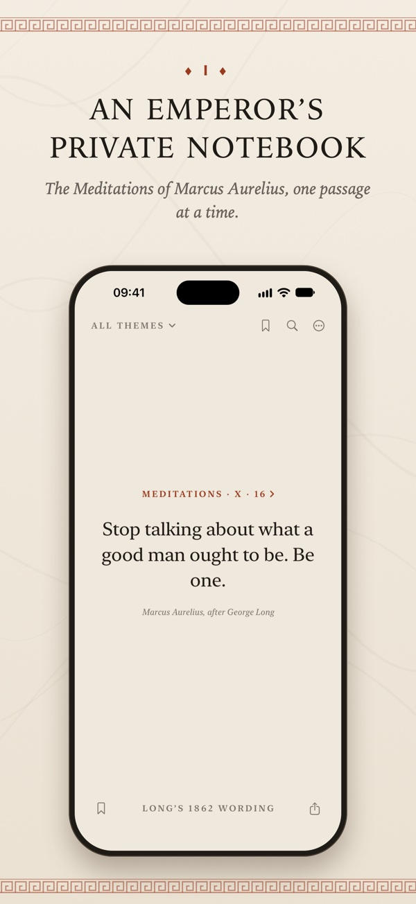
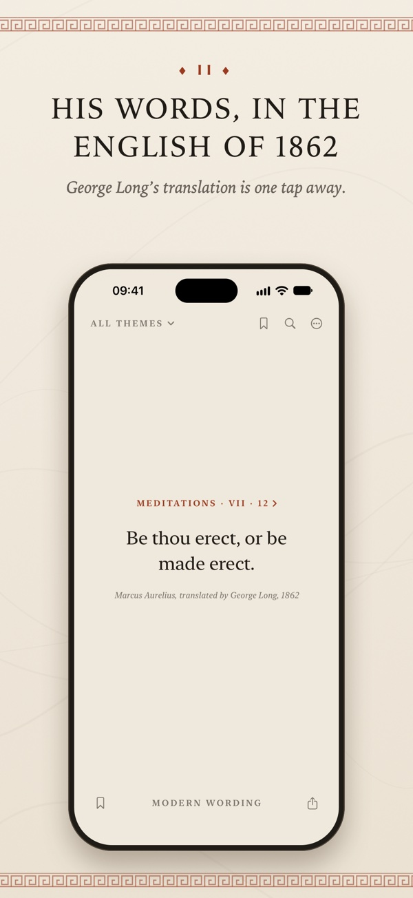
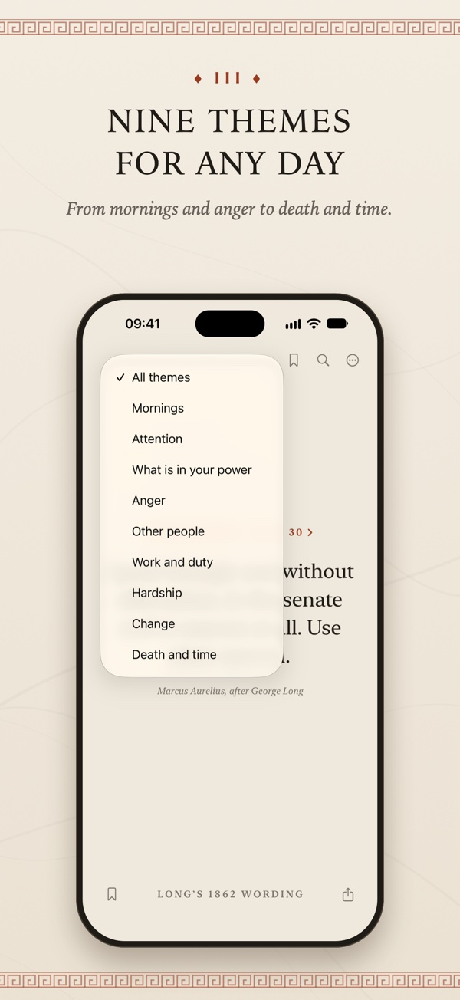
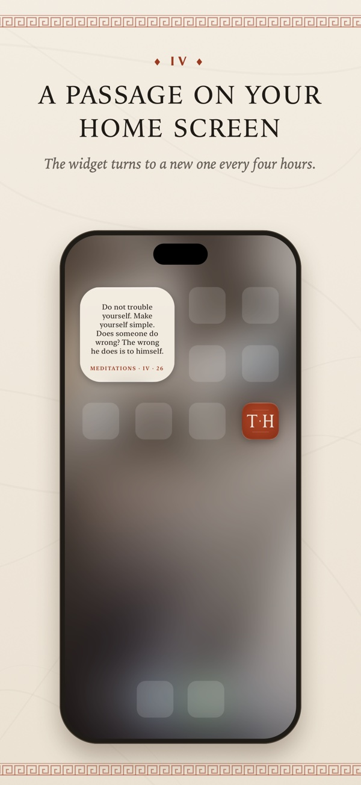
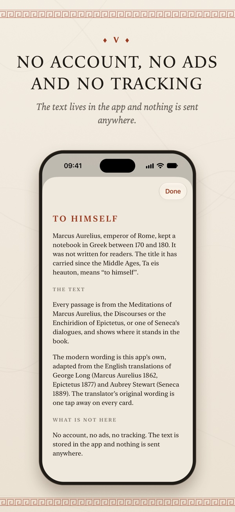

To Himself
The Meditations, one passage at a time.
Meditations · VI · 54
What is not good for the swarm is not good for the bee.
Marcus Aurelius, after George Long
Long’s 1862 wording
That which is not good for the swarm, neither is it good for the bee.
Marcus Aurelius wrote his notebook for nobody but himself. To Himself is an iPhone app that brings it to you one passage at a time, together with the Discourses and the Enchiridion of Epictetus and eleven dialogues of Seneca.





What you can do
- Read passages from Marcus Aurelius, Epictetus and Seneca, one to a screen
- Pick one of nine themes, from mornings and anger to death and time
- Open any passage at its place in the book and read on: the complete text of every work is included
- Search by word, or by place such as 4.17
- Save the passages you want to keep
- Share a passage as a picture
- Get one short passage a day as a notification, at the time you choose
- Put a passage on your Home Screen or Lock Screen with the widget; it changes through the day
- Read in light or dark, in four text sizes
- Use it on iPhone Duo, closed or open
The text
Every passage is from the Meditations of Marcus Aurelius, the Discourses or the Enchiridion of Epictetus, or one of Seneca’s dialogues. The original wording is that of two translators: George Long (Marcus Aurelius 1862, Epictetus 1877) and Aubrey Stewart (Seneca 1889). The modern wording was written for this app from their text. Nothing is invented and nothing is copied from the web.
What is not here
No account, no ads, no tracking. The text is stored in the app, your saved passages and settings stay on your iPhone, and nothing is sent anywhere.